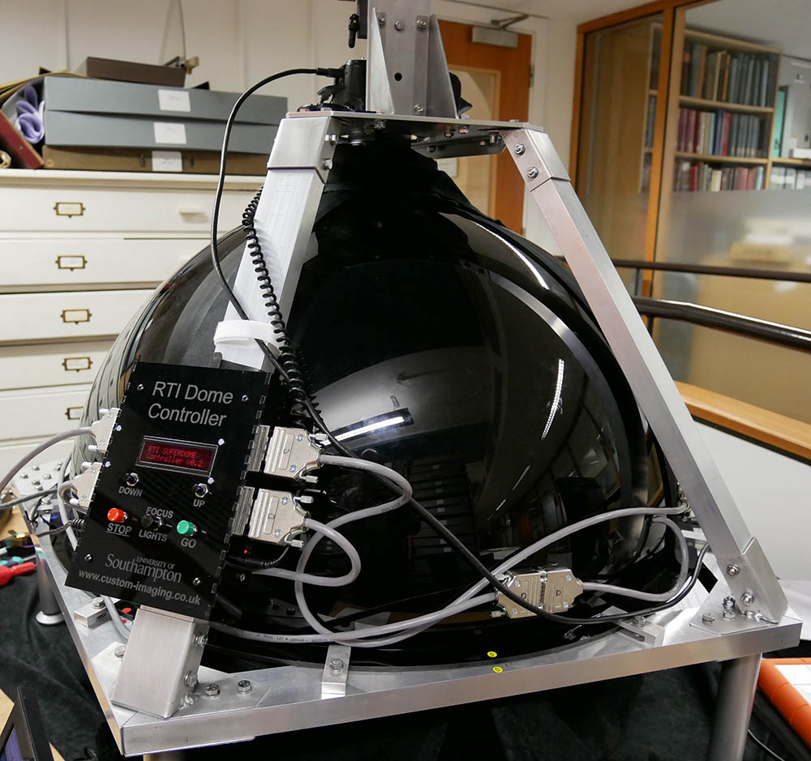

RTI¶
Hardware¶
Example of a RTI dome as produced by custom-imaging.co.uk (their Dome 7).
There is a large variety of scanning equipment available, but in essence, both PLD and RTI require a set of images of an object that is illuminated from various known directions. RTI has 2 types of recording equipment: The dome setups and the highlight RTI setup. The dome setup functions in the similar manner as the PLD domes.
Highlight RTI utilizes chrome/specular spheres to estimate the direction of a point light source (e.g. a flash). This technology is typically cheaper and more flexible in terms of object size to be scanned; for a manual to the procedure see [CHI2013]. The downside is that it generally is slower, requires more intervention and is less accurate, as light sources have to be calculated using the specular reflection in the reflective spheres.
Algorithm¶
Reflectance Transformation Imaging is a per pixel function fitting technique to interactively display objects under varying light conditions. It was originally developed by Tom Malzbender in the form of Polynomial Texture Maps [Malzbender2001].
The observed intensity at a pixel is described a function of the light direction, in the case of PTM as a biquadratic polynomial, but other representations exist. A set of equations relating the observed intensity with the light direction for every image of the image set is then solved for the coefficients.
Besides PTM, another popular RTI method uses hemispherical harmonical functions. Because it can model the light space better, hard shadows and bright specularities are better preserved.
A newer approach uses Principle Component Analysis + Radial Basis Function interpolation [ponchio]
The goal of RTI is to view objects interactively under varying incident light directions. As such, RTI doesn’t use physical laws like PLD to extract surface material characteristics. Effects like self shadowing, interreflections and complicated light-matter interactions (e.g. subsurface scattering, complicated BRDFs) are not taken into account, though their contribution is captured in the fitting/interpolation function. As such, the relighting output appears to be photorealistic - especially for virtual light positions that are close to one of the input images.
Output¶
PTM / HSH coefficients¶
The output of the RTI fitting algorithm are coefficients, e.g. PTM for a PTM RTI and HSH for a HSH RTI. These coefficients are calculated per pixel and stored in a map.
Normal map¶
From certain types of RTI files, ie. from PTM and HSH RTI files, a normal map can be calculated.
Generally, a normal map originating from an HSH RTI is of higher quality than one generated from PTM coefficients. Any spatial blurring that seems to exist is because the PTM or HSH coefficients don’t capture the light space function perfectly. The resulting normal map can therefore also be more blurred than a result optained with a photometric stereo approach such as PLD.
File formats¶
PTM¶
RGB PTM: PTM coefficients are being calculated and saved per color channel (in 8 bit mode), resulting in 3*6 bytes per pixel
LRGB PTM: PTM coefficients are being calculated for the luminance channel and stores non varying RGB values. As the chromaticity doesn’t change too much under varying light directions, this method saves on storage, resulting in 6+3 bytes per pixel
JPEG compression of RGB PTM
JPEG compression of LRGB PTM
JPEGLS compression of RGB PTM
JPEGLS compression of LRGB PTM
Look Up Table PTM
YCrCb color space PTM
The upper 2 versions are the most popular PTM file types, as they are supported by CHI’s processing and viewing software [CHI]
RTI¶
PTM RTI: Polynomial Texture Mapping RTI [Malzbender2001]
HSH RTI: Hemispherical Harmonics RTI [Mudge2008]
SH RTI: Spherical Harmonics RTI
EHSH RTI: Eigen Hemispherical Harmonics RTI [Lam2012]
Adaptive basis RTI
Footnotes